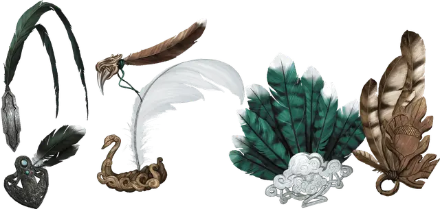

Перо Кваля
Quaal’s Feather Token
Чудесный предмет, редкий

Рекомендованная стоимость 501-5 000 зм
Этот маленький предмет выглядит как перо. Существует несколько разновидностей таких предметов, и каждый из которых обладает своим особым эффектом, используемым один раз. Мастер сам определяет разновидность пера или определяет её случайным образом.
| к100 | Эффект |
| 01-15 | Веер |
| 16-40 | Дерево |
| 41-50 | Кнут |
| 51-65 | Лодка-лебедь |
| 66-80 | Птица |
| 81-00 | Якорь |
Веер. Если вы находитесь на корабле или лодке, то можете действием подбросить веер в воздух на расстояние до 10 футов. Этот предмет исчезнет, и на том месте, где это произошло, появится гигантский машущий веер. Этот веер парит в воздухе и создаёт ветер, достаточный для того, чтобы наполнить паруса корабля, увеличивая его скорость на 5 миль в час в течение 8 часов. Вы можете действием прервать этот эффект.
Дерево. Для использования этого пера вы должны находиться на открытом воздухе. Вы можете действием коснуться свободного пространства на поверхности земли. Перо исчезает, и на том месте, где вы коснулись земли, вырастет дуб, не обладающий никакими магическими свойствами. Высотой дерево будет достигать 60 футов при диаметре ствола 5 футов и радиусе кроны 20 футов.
Кнут. Вы можете действием бросить это перо в любую точку пространства в пределах 10 футов от себя. Перо исчезает, и на его месте появится парящий над землёй кнут. После этого вы можете бонусным действием совершить рукопашную атаку заклинанием по существу, находящемуся в пределах 10 футов от кнута, с бонусом атаки +9. При попадании цель получает урон силовым полем 1к6 + 5.
В свой ход вы можете бонусным действием приказать кнуту переместиться на 20 футов и повторить атаку по существу, находящемуся в пределах 10 футов от него. Кнут исчезает через 1 час, либо после того, как вы действием отпустите его, либо же если вы станете недееспособным или умрёте.
Лодка-лебедь. Вы можете действием прикоснуться этим предметом к водоёму с диаметром как минимум 60 футов. Перо исчезнет, и вместо него появляется лодка в форме лебедя длиной 50 и шириной 20 футов. Эта лодка может самостоятельно двигаться по водной глади со скоростью 6 миль в час. Находясь на лодке, вы можете действием отдавать ей команды двигаться или совершить поворот на 90 градусов. Лодка может перевозить 32 существа Среднего или меньшего размера. Большое существо считается за четыре Средних, а Огромное за девять. Лодка остаётся в вашем распоряжении 24 часа, после чего исчезает. Вы также можете действием прервать действие магии досрочно.
Птица. Вы можете действием подбросить перо в воздух на 5 футов. Перо исчезает, и на его месте появляется огромная, разноцветная птица. Используйте для неё блок статистики рух [roc], но она исполняет ваши простые приказания и не может атаковать. Она может переносить до 500 фунтов, летя со своей максимальной скоростью (16 миль в час при максимуме в 144 мили в день, с часовыми отдыхами через каждые 3 часа), или 1000 фунтов с уменьшенной вдвое скоростью. Птица исчезнет после того, как пролетит свою максимальную дневную дистанцию или, если её хиты опустятся до 0. Вы также можете отпустить её действием.
Якорь. Вы можете действием коснуться этим пером лодки или корабля. В течение следующих 24 часов это судно не может двинуться с места, какие бы средства не использовались для этого. Повторное прикосновение прекращает эффект. Когда эффект заканчивается, перо исчезает.